Wegen des LAPLACEschen Entwicklungssatzes gelten die im folgenden für Zeilen formulierten Aussagen in gleicher Weise für Spalten.
| 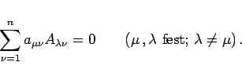 | (4.56) |
Diese Beziehung und der Entwicklungssatz von LAPLACE ergeben zusammengefaßt
| 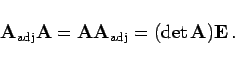 | (4.57) |
Daraus erhält man für die inverse Matrix
| 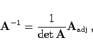 | (4.58) |
wobei als adjungierte Matrix 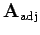 der Matrix  die aus den Adjunkten der Elemente von
die aus den Adjunkten der Elemente von  gebildete und anschließend transponierte Matrix bezeichnet wird. Diese Matrix darf nicht mit der zu einer komplexen Matrix adjungierten Matrix 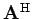 (4.4) verwechselt werden.
gebildete und anschließend transponierte Matrix bezeichnet wird. Diese Matrix darf nicht mit der zu einer komplexen Matrix adjungierten Matrix 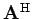 (4.4) verwechselt werden.
| 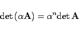 | (4.60) |
zum Ausdruck.
| 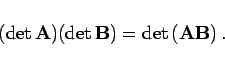 | (4.61) |
Wegen 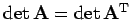 (s. (4.59)) gilt
| 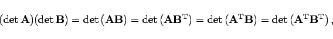 | (4.62) |
d.h., es können entweder Zeilen mit Spalten oder Zeilen mit Zeilen oder Spalten mit Zeilen oder Spalten mit Spalten skalar multipliziert werden.
| Beispiel |
|
Für eine Determinante vom Typ (3,3) erhält man: 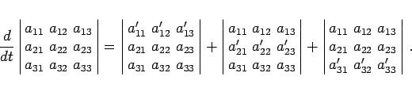
|